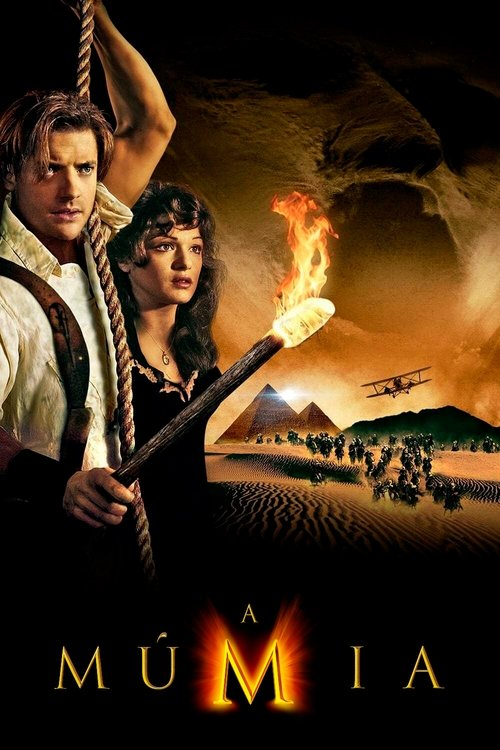
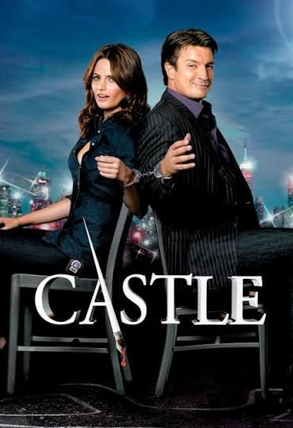
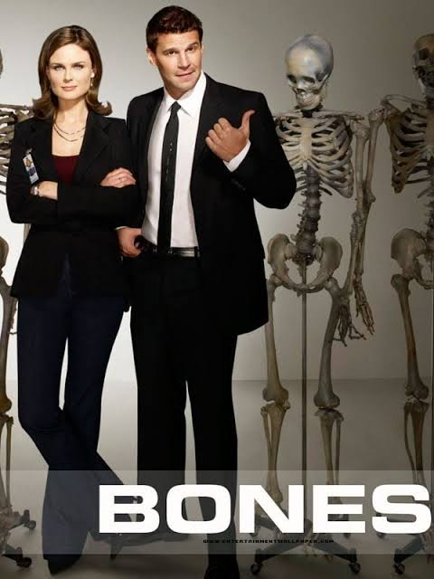
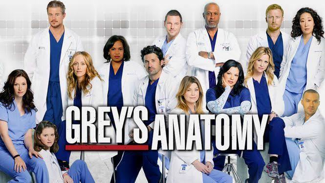
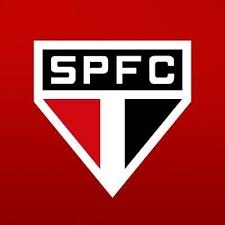
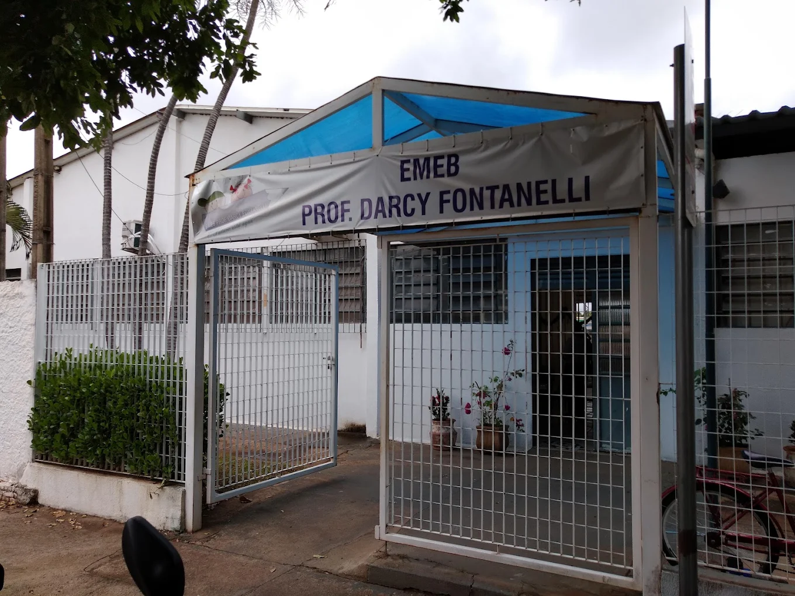
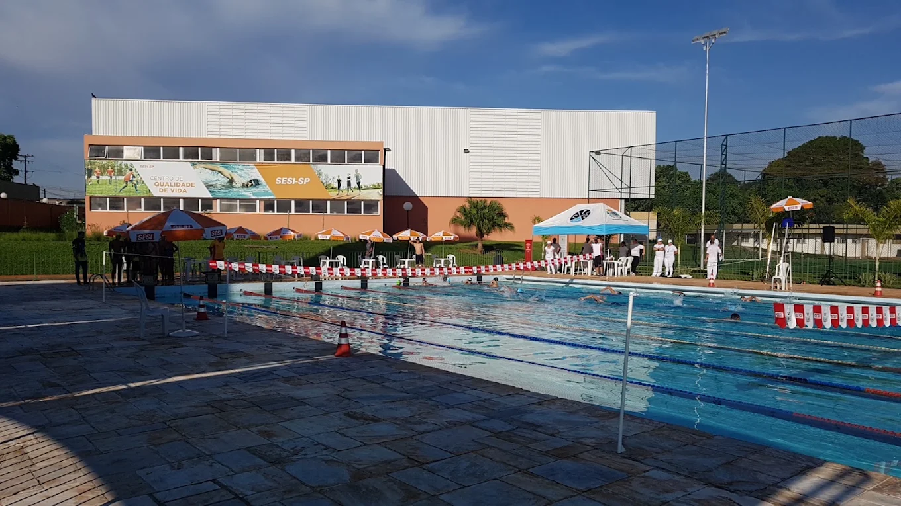
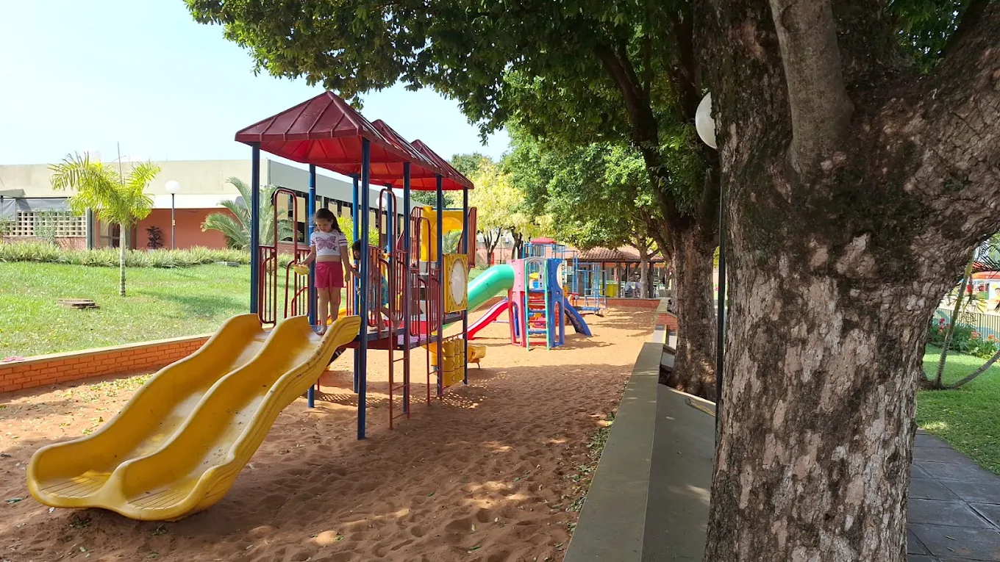
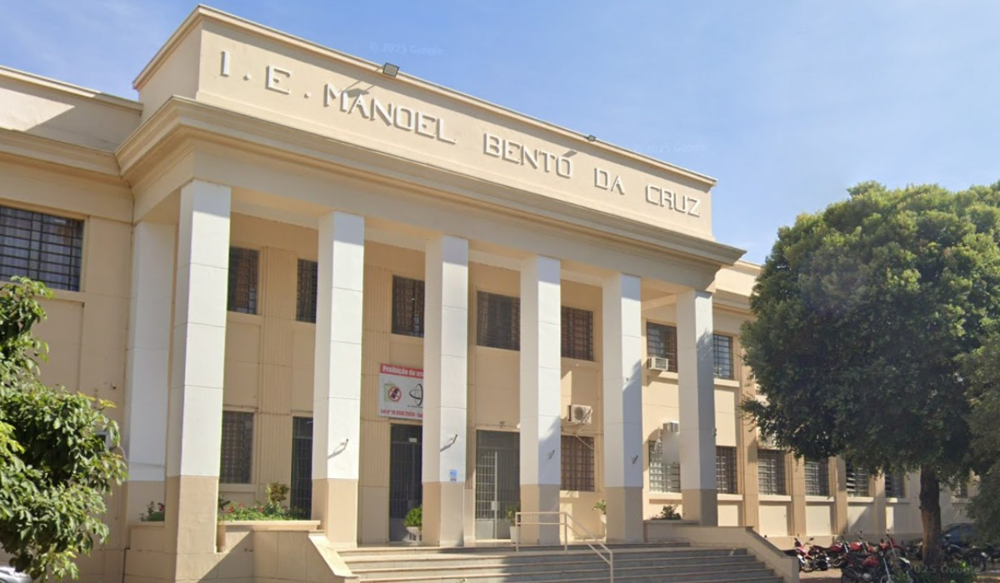
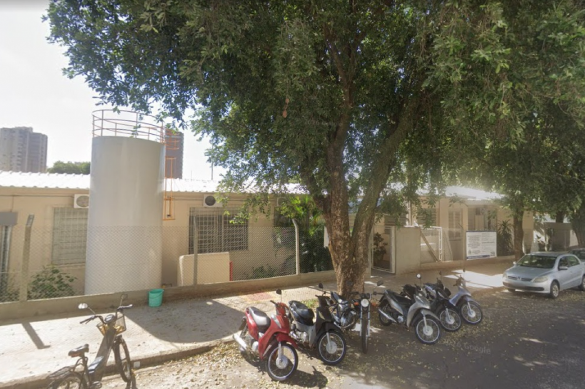

🎬 A Múmia
Aventura, ação e mistério.
MINHA TRAJETÓRIA
“Eu sentia que o interior já não era mais o meu lugar. Eu queria criar asas.”
Depois de alguns anos trabalhando no cartório, comecei a sentir que precisava conhecer novos lugares e buscar novas oportunidades.
Então tomei uma das decisões mais importantes da minha vida: pedi demissão, deixei Araçatuba e, em setembro de 2005, mudei-me para o Paraná.
Fui morar em Araucária, na Região Metropolitana de Curitiba , inicialmente na casa dos meus tios.
Eu estava deixando minha cidade, minha rotina e boa parte daquilo que conhecia para começar uma nova etapa da minha história.
ALÉM DO TRABALHO E DOS ESTUDOS
Minha história começou em Araçatuba, no interior de São Paulo. Em setembro de 2005, mudei-me para Araucária, no Paraná, em busca de novas oportunidades. Ao longo dos anos, construí minha carreira, iniciei minha trajetória empreendedora com a VCS Gestão Documental Ltda., em 2019, e passei a atuar como Diretora de Operações da GDI Soluções Integradas.
Em 2026, retomei minha formação em tecnologia ao iniciar Sistemas de Informação na Universidade Vila Velha (UVV). Gosto de aprender, enfrentar desafios e transformar ideias em projetos concretos.
Nos momentos de lazer, gosto de filmes de comédia, drama, ação e aventura. Entre os meus favoritos está A Múmia. Também gosto de histórias com investigação, suspense e personagens marcantes.

Aventura, ação e mistério.

Investigação criminal com humor e suspense.

Ciência forense e investigação.

Drama médico e histórias humanas.
Também gosto de séries mexicanas que retratam o universo do narcotráfico, pelas tramas de ação e suspense, e de novelas turcas, pelos dramas familiares e pelas reviravoltas.
Meu gosto musical é variado: rock internacional, sertanejo universitário, MPB, pagode e samba. Entre meus artistas e grupos favoritos estão Guns N' Roses, Henrique & Juliano, Grupo Revelação e Exaltasamba.
Minha música favorita Patience - do Guns N' Roses.
Audio em MP3 audio/Guns N' Roses - Patience.mp3 mp3

⚽ No futebol, torço para o São Paulo Futebol Clube.
Meu contato com teclados começou com um curso de datilografia, em 1997. Em 2002, iniciei Ciência da Computação e, em 2005, concluí um curso de Manutenção de Microcomputadores. Depois de construir uma carreira em administração e gestão da informação, voltei à graduação na área tecnológica em 2026.
Para mim, evoluir significa estar aberta a novos conhecimentos, reconhecer oportunidades e continuar construindo o futuro com dedicação e curiosidade.
MEMÓRIAS DA MINHA TRAJETÓRIA
Alguns registros das escolas, cursos e experiências que marcaram meus primeiros anos de aprendizado.





